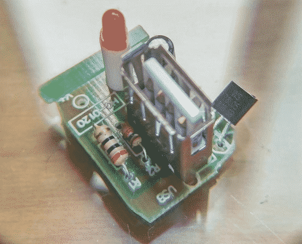

Incredible Chinese USB Car Power Supply
Recently I bought a couple of those super ultra cheap cigarette plug extensions to distribute 12V in the lab for various things. As usual with everything chinese, I decided to open it up to see how horrible it was inside, but I also did that to upgrade the wiring since I would be pulling a couple of amps from this and I want to minimize the voltage drop.



This is the incredible thing I found inside the thing as the 5V supply for the USB socket. A 7805 regulator and a 20 ohm 1/4W resistor in series with the 5V output. I guess it could have been worse, they could have used a 5.2V zener or the worst of all just a resistor voltage divider.
China never ceases to amaze me.
This article was imported from my old blog . Some things may be broken.